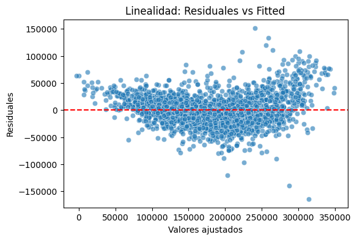
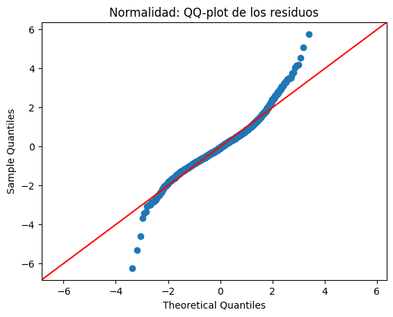

Capítulo 6: Diagnóstico de supuestos#
from pathlib import Path
DATA_PATH = Path("../data/AmesHousing_codificada.csv") # relativo a book/notebooks/
assert DATA_PATH.is_file(), "No se encontró '../data/AmesHousing_codificada.csv'"
print("Usando CSV:", DATA_PATH.resolve())
Usando CSV: /workspaces/ames-housing-project/book/data/AmesHousing_codificada.csv
import pandas as pd
import numpy as np
import statsmodels.api as sm
data_modelo_final = pd.read_csv(DATA_PATH)
data_modelo_final = data_modelo_final[['SalePrice','Overall Qual','Gr Liv Area','Garage Cars','Garage Area','Total Bsmt SF','1st Flr SF','Year Built','Year Remod/Add','Full Bath','Garage Yr Blt','TotRms AbvGrd','Fireplaces','Mas Vnr Area','BsmtFin SF 1']]
# Separar variable dependiente e independientes
X = data_modelo_final[['Overall Qual','Gr Liv Area','Garage Cars','Garage Area','Year Built','Total Bsmt SF','Year Remod/Add','1st Flr SF','Full Bath','Garage Yr Blt','Fireplaces','TotRms AbvGrd']]
y = data_modelo_final[['SalePrice']]
# Agregar la constante (intercepto)
X = sm.add_constant(X)
# Crear el modelo_final
modelo_final = sm.OLS(y, X)
# Ajustar (fit)
resultados = modelo_final.fit()
# Imprimir resumen
print(resultados.summary())
OLS Regression Results
==============================================================================
Dep. Variable: SalePrice R-squared: 0.845
Model: OLS Adj. R-squared: 0.845
Method: Least Squares F-statistic: 1255.
Date: Mon, 10 Nov 2025 Prob (F-statistic): 0.00
Time: 04:14:31 Log-Likelihood: -32098.
No. Observations: 2768 AIC: 6.422e+04
Df Residuals: 2755 BIC: 6.430e+04
Df Model: 12
Covariance Type: nonrobust
==================================================================================
coef std err t P>|t| [0.025 0.975]
----------------------------------------------------------------------------------
const -1.388e+06 6.77e+04 -20.497 0.000 -1.52e+06 -1.26e+06
Overall Qual 1.548e+04 612.228 25.282 0.000 1.43e+04 1.67e+04
Gr Liv Area 50.9544 2.445 20.841 0.000 46.160 55.748
Garage Cars 865.8764 1636.248 0.529 0.597 -2342.520 4074.273
Garage Area 38.4294 5.743 6.692 0.000 27.169 49.690
Year Built 266.8266 31.535 8.461 0.000 204.991 328.662
Total Bsmt SF 27.1376 2.264 11.988 0.000 22.699 31.576
Year Remod/Add 357.9672 33.590 10.657 0.000 292.103 423.831
1st Flr SF 10.6326 2.576 4.127 0.000 5.581 15.684
Full Bath -7030.8661 1412.992 -4.976 0.000 -9801.496 -4260.236
Garage Yr Blt 55.9347 35.708 1.566 0.117 -14.083 125.952
Fireplaces 8865.1262 960.246 9.232 0.000 6982.251 1.07e+04
TotRms AbvGrd -825.2572 605.818 -1.362 0.173 -2013.160 362.646
==============================================================================
Omnibus: 245.293 Durbin-Watson: 1.590
Prob(Omnibus): 0.000 Jarque-Bera (JB): 936.365
Skew: 0.377 Prob(JB): 4.69e-204
Kurtosis: 5.748 Cond. No. 5.49e+05
==============================================================================
Notes:
[1] Standard Errors assume that the covariance matrix of the errors is correctly specified.
[2] The condition number is large, 5.49e+05. This might indicate that there are
strong multicollinearity or other numerical problems.
import numpy as np
import pandas as pd
import matplotlib.pyplot as plt
import seaborn as sns
import statsmodels.api as sm
import statsmodels.stats.api as sms
from statsmodels.stats.outliers_influence import variance_inflation_factor
from scipy import stats
# === 1️⃣ Linealidad ===
plt.figure(figsize=(6,4))
sns.scatterplot(x=resultados.fittedvalues, y=resultados.resid, alpha=0.6)
plt.axhline(0, color="red", linestyle="--")
plt.title("Linealidad: Residuales vs Fitted")
plt.xlabel("Valores ajustados")
plt.ylabel("Residuales")
plt.show()
# === 2️⃣ Homocedasticidad ===
bp_test = sms.het_breuschpagan(resultados.resid, resultados.model.exog)
white_test = sms.het_white(resultados.resid, resultados.model.exog)
bp_pvalue = bp_test[1]
white_pvalue = white_test[1]
print("\n🟩 Homocedasticidad:")
print(f"Breusch–Pagan p-value: {bp_pvalue:.4f}")
print(f"White p-value: {white_pvalue:.4f}")
if bp_pvalue > 0.05 and white_pvalue > 0.05:
print("✅ No hay evidencia de heterocedasticidad.")
else:
print("⚠️ Posible heterocedasticidad detectada.")
# === 3️⃣ Normalidad ===
sm.qqplot(resultados.resid, line="45", fit=True)
plt.title("Normalidad: QQ-plot de los residuos")
plt.show()
shapiro_test = stats.shapiro(resultados.resid)
print("\n🟩 Normalidad:")
print(f"Shapiro-Wilk p-value: {shapiro_test.pvalue:.4f}")
if shapiro_test.pvalue > 0.05:
print("✅ Los residuos parecen normales.")
else:
print("⚠️ Los residuos no son perfectamente normales.")
# === 4️⃣ Autocorrelación ===
dw = sm.stats.stattools.durbin_watson(resultados.resid)
print("\n🟩 Autocorrelación:")
print(f"Durbin–Watson: {dw:.2f}")
if 1.5 < dw < 2.5:
print("✅ No hay autocorrelación significativa.")
else:
print("⚠️ Posible autocorrelación en los residuos.")
# === 5️⃣ Multicolinealidad ===
vif_data = pd.DataFrame()
vif_data["Variable"] = resultados.model.exog_names
vif_data["VIF"] = [variance_inflation_factor(resultados.model.exog, i) for i in range(resultados.model.exog.shape[1])]
print("\n🟩 Multicolinealidad (VIF):")
print(vif_data)
print("\n✅ VIF < 5 indica multicolinealidad aceptable.")
# === 6️⃣ Resumen interpretativo ===
resumen = pd.DataFrame({
"Supuesto": ["Linealidad", "Homocedasticidad", "Normalidad", "Autocorrelación", "Multicolinealidad"],
"Método": ["Residual vs Fitted", "Breusch–Pagan / White", "QQ-plot / Shapiro", "Durbin–Watson", "VIF"],
"Criterio esperado": [
"Distribución aleatoria alrededor de 0",
"p > 0.05 → ok",
"Puntos ~ línea / p > 0.05 → ok",
"~2 → ok",
"<5 → aceptable"
]
})
print("\n📋 Resumen esperado:")
print(resumen.to_markdown(index=False))


🟩 Homocedasticidad:
Breusch–Pagan p-value: 0.0000
White p-value: 0.0000
⚠️ Posible heterocedasticidad detectada.
🟩 Normalidad:
Shapiro-Wilk p-value: 0.0000
⚠️ Los residuos no son perfectamente normales.
🟩 Autocorrelación:
Durbin–Watson: 1.59
✅ No hay autocorrelación significativa.
🟩 Multicolinealidad (VIF):
Variable VIF
0 const 18276.768957
1 Overall Qual 2.676051
2 Gr Liv Area 4.561283
3 Garage Cars 5.686113
4 Garage Area 5.260232
5 Year Built 3.538977
6 Total Bsmt SF 3.065366
7 Year Remod/Add 1.965601
8 1st Flr SF 3.061355
9 Full Bath 2.208047
10 Garage Yr Blt 3.141189
11 Fireplaces 1.359936
12 TotRms AbvGrd 2.970047
✅ VIF < 5 indica multicolinealidad aceptable.
📋 Resumen esperado:
| Supuesto | Método | Criterio esperado |
|:------------------|:----------------------|:--------------------------------------|
| Linealidad | Residual vs Fitted | Distribución aleatoria alrededor de 0 |
| Homocedasticidad | Breusch–Pagan / White | p > 0.05 → ok |
| Normalidad | QQ-plot / Shapiro | Puntos ~ línea / p > 0.05 → ok |
| Autocorrelación | Durbin–Watson | ~2 → ok |
| Multicolinealidad | VIF | <5 → aceptable |
Takeaways#
Síntesis de aprendizajes y decisiones reproducibles del notebook:
MyST/Jupytext requiere el encabezado YAML al inicio del archivo.
Todas las celdas ejecutables usan bloques
{code-cell} ipython3en la columna 0.Definimos
DATA_PATHuna sola vez y unificamos el nombre del CSV aames_housing_clean.csv.Evitamos rutas absolutas (p. ej.,
/workspaces/...) para compatibilidad con Codespaces y GitHub Pages.Mensajes narrativos con
print()fueron pasados a Markdown fuera de cajita.